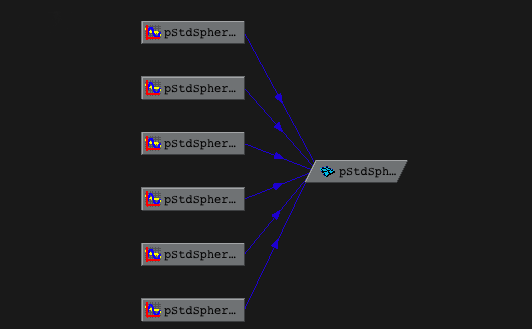
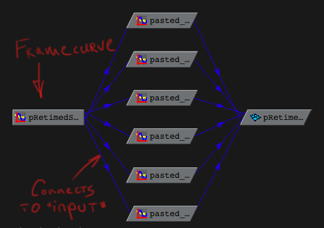

To import a framecurve file into Nuke, select yuour animation channel and pick the "Import Time+ascii" option. This will properly import a framecurve file into any animation channel you like.
To retime any animation channel, go to "Add expression" and between parentheses supply a handle to the knob containing your framecurve.
We also offer a sample Nuke script that shows how such a setup looks
Download and source our framecurve script for Maya. This will add a Framecurve menu to your "Commands" menu. Pick an object that is animated, and pick this script. The framecurve will be applied as input to every animation curve that drives the object you selected.
Here's how a standard Hypergraph hierarchy might look for an animated object:
Afte running the script, a framecurve will be created and plugged into the input connection of the animation curves of the object you retimed
If you want to look at the test scene for this kind of setup, type framecurve -samplescene maya sampleScene.ma to output a sample scene.
Run framecurve --script houdini to get a Python script that creates a Framecurve gizmo. Run that in your chopnet, select the gizmo and pick the framecurve file that you want to use. An animation curve will be created and
Run framecurve --to flame. This will emit a setup for the Timewarp module. Copy the "Frame" channel of the timewarp into, say, an Action setup, name it "TIME_DRIVER" and make a copy of an object you want to timewarp. Then enter the following expression into the channel editor of that object:
eval(Axis1, TIME_DRIVER.position.x)
substituting "Axis1" for the name of the object you've copied. This might be confusing for people who never used this kind of a setup so we offer a simple Action setup to demonstrate a framecurve in action.